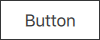
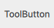

Button Controls
Qt Labs Controls offers a selection of button-like controls.
Base of all button controls | |
A button control | |
A check box control | |
A radio button control | |
A switch control | |
A tool button control |
Each type of button has its own specific target use case. The following sections offer guidelines for choosing the appropriate type of button, depending on the use case.
Button Control

Button presents a push-button control that can be pushed or clicked by the user. Buttons are normally used to perform an action, or to answer a question. Typical buttons are OK, Apply, Cancel, Close, Yes, No, and Help.
CheckBox Control
CheckBox presents an option button that can be toggled on (checked) or off (unchecked). Check boxes are typically used to select one or more options from a set of options.
RadioButton Control
RadioButton presents an option button that can be toggled on (checked) or off (unchecked). Radio buttons are typically used to select one option from a set of options.
Switch Control
Switch is an option button that can be dragged or toggled on (checked) or off (unchecked). Switches are typically used to select between two states.
ToolButton Control

ToolButton is functionally similar to Button, but provides a look that is more suitable within a ToolBar.